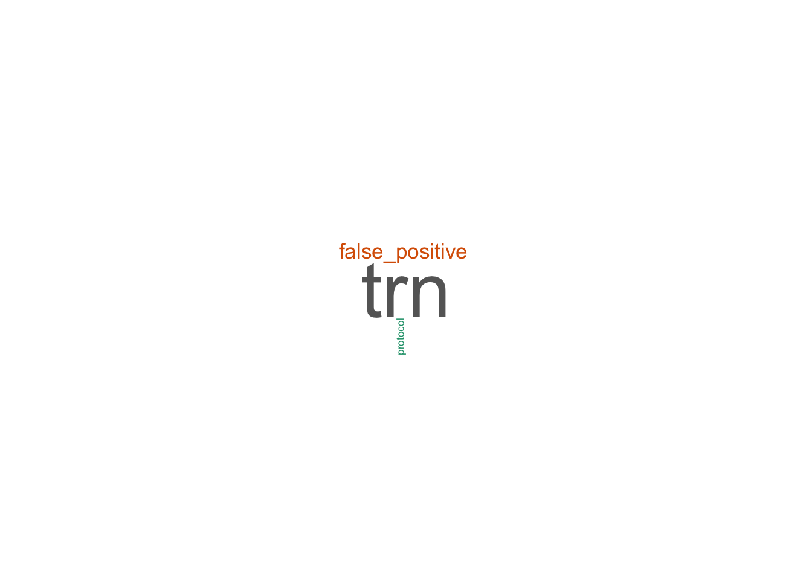

# create a subset with id_type and its frequency
id_group <- as.data.frame(table(data$id_type_group))
wordcloud(words = id_group$Var1,
freq = id_group$Freq,
min.freq = 0,
max.words=200,
random.order = FALSE,
rot.per=0.35,
colors=brewer.pal(8, "Dark2"))